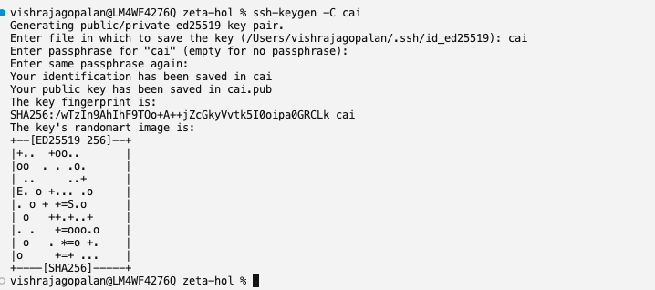
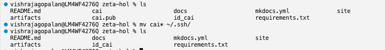
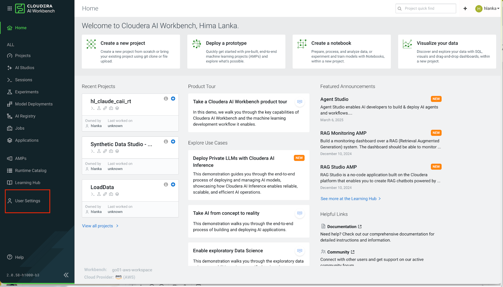
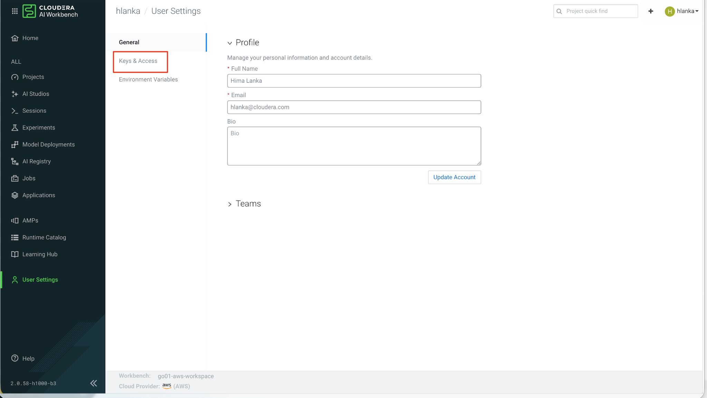
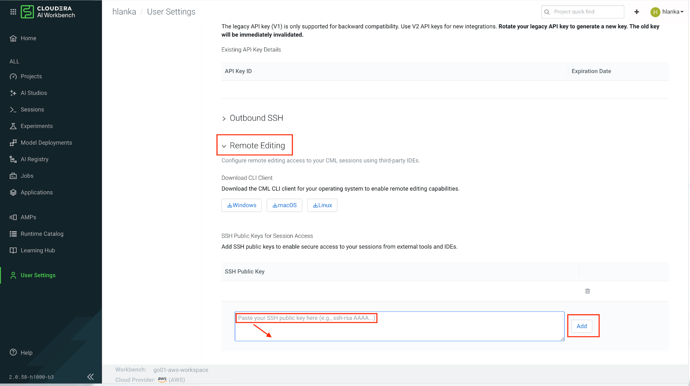
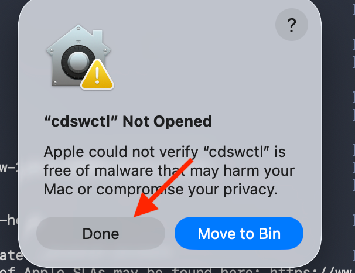
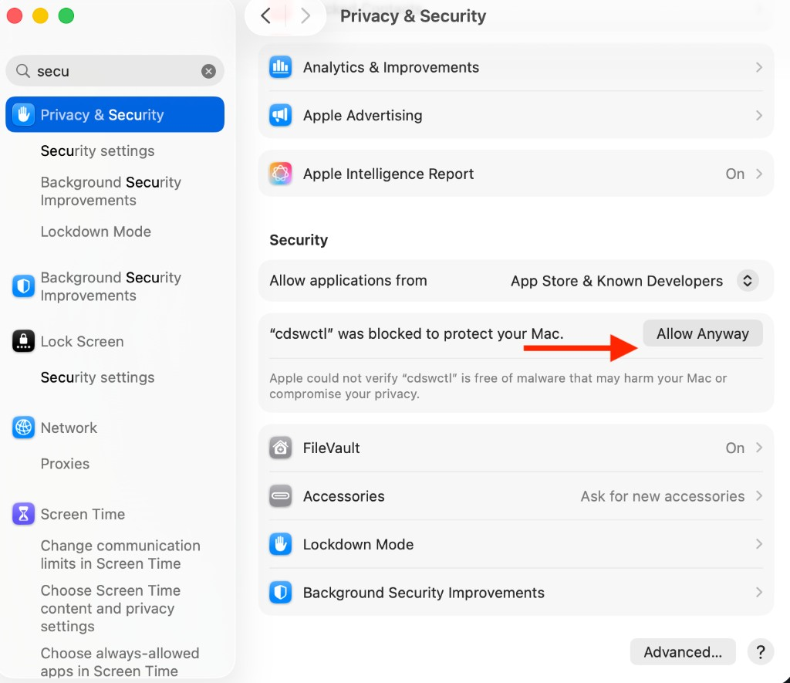
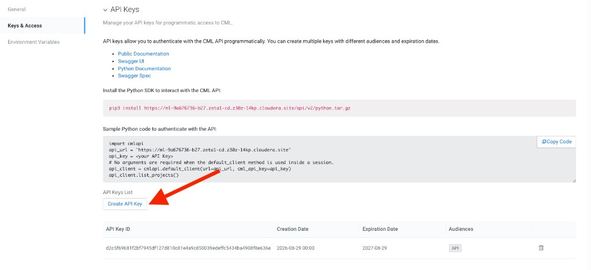
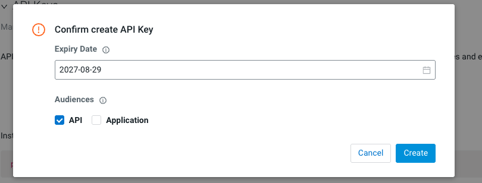
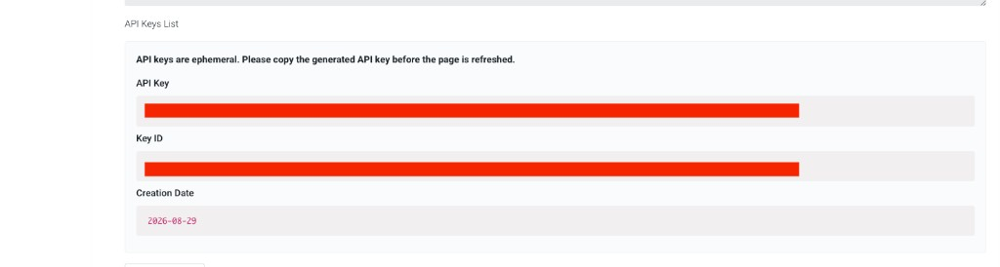

Prerequisites¶
Complete these one-time steps before connecting Cursor to Cloudera AI. Content adapted from the Cursor Remote SSH guide.
Before you begin, ensure you have:
- [x] Logged in to Cloudera AI and completed workbench setup
- [x] Created your team project in the Cloudera AI Workbench
- [x] Cursor IDE installed on your local machine (cursor.com)
- [x]
jqinstalled (brew install jqon macOS) — required by the connection script
1. Generate an SSH Key¶
Run the following command to generate a new SSH key pair:
When prompted "Enter file in which to save the key", type cai (this creates the key in your current directory rather than the default location).
Press Enter to skip the passphrase prompts (leave both empty). The connection script requires a key without a passphrase.

2. Move the Keys to ~/.ssh/¶
If the ~/.ssh/ directory does not exist yet (common on a new machine), create it first:
Move the generated private and public key files into your SSH directory:
Verify the keys are in place:
You should see ~/.ssh/cai (private key) and ~/.ssh/cai.pub (public key).

3. Copy the Public Key¶
Copy the entire output line.
4. Add the Key to the Workbench¶
In the Cloudera AI Workbench, go to User Settings → Keys & Access → Remote Editing, paste your public key into SSH Public Key, and click Add.


While you are on the Remote Editing page, note that the CML CLI client (cdswctl) can be downloaded for your operating system — you will do this in the next step.

5. Download and Unblock the CML CLI Client¶
Download the CML CLI client (cdswctl) for your operating system from the Remote Editing section shown in step 4.
Unpack the downloaded archive. You should have a folder containing the cdswctl binary (for example, cdsw-2.0.0.95880-darwin-amd64 on Mac).
Mac: Allow cdswctl to Run¶
macOS quarantines downloaded files and will not let you run cdswctl directly from the terminal on first use. When you try, you may see a dialog like this — click Done (do not click Move to Bin):

Then allow the binary manually:
- Open System Settings → Privacy & Security → Security
- Scroll down until you see a message that
"cdswctl" was blockedto protect your Mac - Click Allow Anyway

- Run
cdswctlonce more from the terminal — macOS may ask you to confirm again; choose Open
Alternative: Remove Quarantine via Terminal
If the Allow Anyway button does not appear, you can remove the quarantine flag manually:
6. Add cdswctl to Your PATH¶
Add the folder containing cdswctl to your shell PATH so you can run it from any directory.
Get the Path to cdswctl¶
In your terminal, change into the folder where you unpacked cdswctl, then print the full path:
Copy the output — you will use it in the steps below. The folder name will look something like cdsw-2.0.0.95880-darwin-amd64.
Verify cdswctl is in that folder:
Mac (zsh)¶
1. Create ~/.zshrc if it does not exist
2. Open the file to add your PATH
Open it in TextEdit for easy editing:
Alternatively, edit in the terminal with nano ~/.zshrc.
3. Add your PATH variable
Paste the following line at the end of the file, replacing the path with the output from pwd above:
Save the file (Cmd+S) and close it.
4. Load the updated PATH
5. Verify
You should see the cdswctl usage output without a "command not found" error.
Mac Apple Silicon: bad CPU type in executable
If cdswctl --help returns:
The downloaded binary is Intel-only and your Mac needs Rosetta. Install it (one-time):
Then rerun:
This step is only needed if you see the bad CPU type error above.
Windows (PowerShell)¶
1. Get the folder path
In PowerShell, navigate to the unpacked folder and print the path:
Copy the output path.
2. Add to your user PATH permanently
Replace the path below with your copied path:
[Environment]::SetEnvironmentVariable(
"Path",
$env:Path + ";C:\Users\<username>\Downloads\cdsw-2.0.0.xxxxx-windows-amd64",
"User"
)
3. Restart your terminal, then verify:
Windows GUI Alternative
You can also add the folder via Settings → System → About → Advanced system settings → Environment Variables, then edit the User variable Path and add the folder containing cdswctl.exe.
7. Create an API Key¶
In the Cloudera AI Workbench, go to User Settings → Keys & Access → API Keys and click Create API Key.

In the confirmation dialog, accept the default expiry settings (ensure API is checked under Audiences) and click Create.

Save Your API Key Immediately
API keys are ephemeral — they are shown only once. Copy the generated API key and save it in a notepad or password manager. You will need this key in your connect-cai.env file.
Do not use a Legacy API key — create a new API key in Cloudera AI if you see a 401 on login.

8. Create the SSH Config Entry¶
Add the following entry to ~/.ssh/config:
Host cai-workbench
HostName localhost
Port 3735
User cdsw
IdentityFile ~/.ssh/cai
StrictHostKeyChecking no
ServerAliveInterval 60
ServerAliveCountMax 10
Port is managed automatically
The connect-cursor-cai.sh script updates the Port value in this entry each session. You normally do not need to edit it manually.
Once all prerequisites are complete, proceed to Connecting Cursor to CAI.